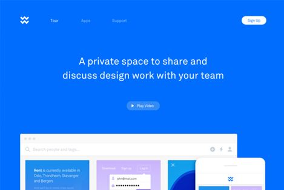

关于男女平等的话题，不知道提倡了多少年，可是时至今日，似乎依旧没有实现真正意义上的平等。女性在就业时，依然会有各种歧视和压力。近年来，IT行业火爆，各种软件开发盛行，人才短缺，高薪招聘，对女孩子来说都是绝对的诱惑。有很多女孩子想要从事软件开发行业，那么软件开发适合女孩子学习吗?

很多人表示只听还说过程序猿，难道还有程序媛?是的，有，Web前端开发就有很多程序媛。郑重声明：专业和性别无关;专业和外表无关;专业只与能力有关!
不止一次的在新闻报道中看到，几经辛苦位居高层的女性最后退出科技行业，或妥协于家庭或妥协于环境，让人唏嘘。人们往往下意识的 自动忽略女性的工作能力，其实如今的女性有着强悍的工作能力和自我学习意识，我们要给予充分的赞美，而不是否定和质疑。
现实的残酷还不止这些质疑，就薪资而言同等资历的男女从事相同工作，男性的薪资水平明显要比女性要高。有人反驳说，这是因为女性从一开始就选择了收入较低的行业，或者为了兼顾家庭无法百分百投入工作，这种说法有一定道理，但并不是真相。真相是，一个科技公司，只要你认真观察就会发现男性员工绝对多于女性员工。赤裸裸的性别歧视。
看完这些关于女性就业的现状，是不是感觉到鸭梨山大?有句话说得好，所谓的压力就是最好的动力。既然女性就业现状已经如此严峻，作为女孩子更应该寻找出路。目前Web行业发展火爆，就业前景好，薪资待遇高，相对学习简单，女孩子有兴趣的话，为什么不去学习呢?我身边就有好多程序媛，或许是发自内心的热爱，或许是看中了互联网的发展趋势，毅然坚定的选择了软件开发行业，在这个曾经属于男人的世界里，毫不服输的活出自己的气度。
优逸客老师建议你，如果喜欢Web前端，就勇敢去学习吧，走一条属于自己的路，跳出大众意识的怪圈，有一天回头去看，你会感激当初自己的勇敢和坚持!
Copyright © 2013-2017 版权所有 优逸客科技有限公司
联系电话：400-969-7660 晋ICP备13006051号